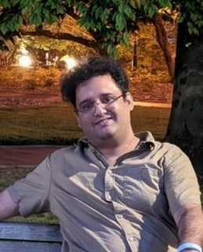

Bilal Riaz
PhD Candidate in Electrical and Computer Engineering, University of Delaware
Specializing in machine learning, optimal transport, and applied optimization
CV /
Google Scholar /
GitHub /
Email
Publications
- Partial Optimal Transport for Support Subset Selection
Bilal Riaz, Yuksel Karahan, Austin J. Brockmeier
Transactions on Machine Learning Research, 2023
- Kernel Landmarks: An Empirical Statistical Approach to Detect Covariate Shift
Yuksel Karahan, Bilal Riaz, Austin J. Brockmeier
NeurIPS 2021 Workshop on Distribution Shifts
- Optimal Control Methods for Quantum Gate Preparation: a comparative study
Bilal Riaz, Cong Shuang, Shahid Qamar
Quantum Information Processing, 2019
- Lyapunov based Control for one qubit Quantum gates in Coherence vector formulation
Bilal Riaz, Cong Shuang, Shahid Qamar
Chinese Control Conference, 2018
- Lyapunov-based feedback control of two-level stochastic open quantum systems
Shahid Qamar, Cong Shuang, Bilal Riaz
IEEE CIS-RAM, 2017
- Neural Optimal Transport for Subset Alignment
Bilal Riaz, Austin J. Brockmeier
in preparation
- Finding Landmarks of Covariate Shift with Kernel Landmark Sliced Wasserstein Distance
Yuksel Karahan, Bilal Riaz, Hau Phan, Matthew S. Emigh, Austin J. Brockmeier
Submitted to TMLR
- Optimal Transport with Frequency Warping for Bags of Spectra
Bilal Riaz, Austin J. Meek, Austin J. Brockmeier
Submitted to IEEE Open Journal of Signal Processing
- Distributional Landmark for Detecting Multi-Mode Discrepancies
Yuksel Karahan, Bilal Riaz, Matthew S. Emigh, Austin J. Brockmeier
in preparation
...see my CV for full details.